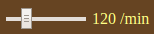
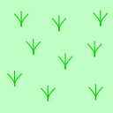

SamurAI Jockey 2018 レースビューワ は SamurAI Jockey 2018 ゲームの結果をブラウザ上で可視化するツールです.
下図はレースビューワの表示画面例です.
最上部の茶色の部分は制御パネルで, ゲームの再生を制御するボタンやスライダーが並んでいます. その下にあるグレーの部分状況表示パネルで, レースの状況に関する情報を表示します. その下にレースコース表示があります.
表示を制御するボタンやスライダは, 画面最上部の制御パネルにあります. 以下, 各ボタン・スライダについて説明します.
ボタン をクリックすると,
SamurAI Jockey ゲームのログファイルを選ぶダイアログが表示されるので,
ロードするファイルを選んでください.
ログファイルは審判システムが出力する1回のレースの進行と結果を表すもので.
ログファイルのサンプルが
SamurAI Jockey 2018 システムの配布ソフトウェア中の
samples/sample.racelog にあります.
ログファイルをロードすると, 状況表示パネルやレースコース表示の内容が更新さます.
ボタンに が表示されているときは, レースの自動再生開始前あるいは再生中断中です. このときにクリックすると, レースの自動再生を開始あるいは継続します.
ボタンに が表示されているときは, レースの自動再生中です. このときにクリックすると, レースの再生を中断します.
自動再生がレースの最後まで来ると, 自動再生は終了します.
ボタン と はステップ再生ボタンです. これらをクリックすると, 状況表示を1ステップ前後に更新します.
ボタン をクリックすると, 表示する状況はレース開始時に戻ります.
制御パネル中のスライダー  を使って自動再生の速度を制御できます. スライダーのノブを左に動かすと再生は遅く, 右に動かすと速くなります. 現在の再生速度の設定値 (毎分のステップ数) はスライダーの横に表示されます.
制御パネル中の虫眼鏡ボタン 
 をクリックするとレースコース表示を拡大・縮小します。
をクリックするとレースコース表示を拡大・縮小します。
レースコース全体を一度に表示しきれない場合, 制御パネル中の Show: の直後のセレクタで, 自動再生中にコースのどの部分を表示するかを設定します. 各選択肢の意味は以下のとおりです.
ボタンをクリックすると, このページを表示します.
下記のキーボード入力による制御もできます.
| キー | 機能 | キー | 機能 | キー | 機能 |
|---|---|---|---|---|---|
s | Start/Stop | + | 表示拡大 | ↑ | 上にスクロール |
r | 巻き戻し | − | 表示縮小 | ↓ | 下にスクロール |
f | ステップ前進 | v | 表示部分設定変更 | ← | 左にスクロール |
b | ステップ後退 | → | 右にスクロール |
状況表示パネルには, 現在表示中のステップにおけるゲームの状況のサマリーを表示します.
左端の時計のアイコンの右に, 現在のステップ番号が表示されます.
プレイヤの名前と現在位置 (枡の座標) が次に表示されます. プレイヤ 0 とプレイヤ 1 について, それぞれ赤と青の文字で表示します. 既にゴールしたプレイヤについては, 位置の代わりにゴール時間が表示されます.
レースコース表示には, レースコースの各枡の種類, 両プレイヤの現在の位置と軌跡, そして当該ステップで指示した動きが表示されます.
|  | ||
| 平坦 | 障害物 | 水濠 |
枡の種類は右図のように表示されます. 障害物の枡には主催者やスポンサーのロゴが数枡にまたがって表示されることもあります.
スタートラインは赤, ゴールラインは緑の線で表示します.
表示するステップにおけるプレイヤの位置と指示した進行方向は, 赤 (プレイヤ0) と青 (プレイヤ1) の三角形で表示します.
プレイヤの軌跡, すなわちそれまでにプレイヤが動いてきた跡は, それぞれの色の小円と折線で表示します. コースアウトや衝突のために指示通りの動きができなかったステップについては, 破線で指示された動きを示します.
レースビューワに戻るにはここをクリックしてください.